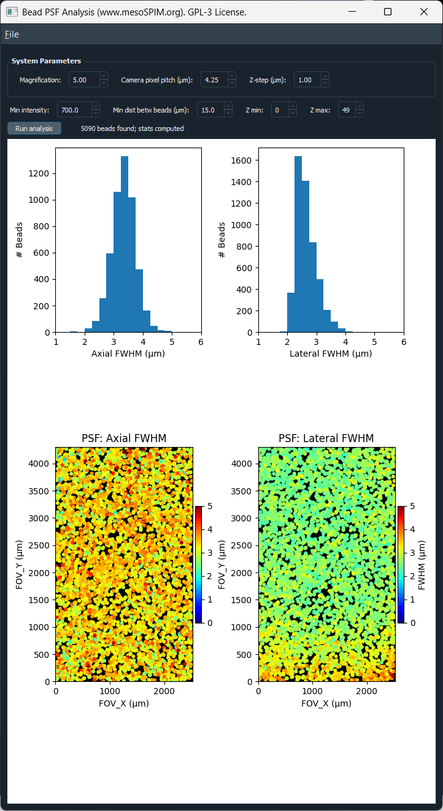

Bead PSF Analysis¶
The Bead PSF Analysis tool detects fluorescent beads in a 3D z-stack, fits a 1D Gaussian profile along each bead’s axial and lateral directions, and reports the resulting full-width-at-half-maximum (FWHM) — a common proxy for the microscope’s point spread function (PSF) — as histograms and as spatial maps across the field of view.
It ships as a single, self-contained module
(mesoSPIM/src/utils/psf_gui_qt.py) and can be launched either from inside
mesoSPIM-control or as a standalone application.
{kind=link}

Bead PSF Analysis window: system parameters and analysis controls (top), axial/lateral FWHM histograms (middle), and FWHM maps across the field of view, overlaid on the bead max-projection (bottom).¶
Launching the tool¶
From mesoSPIM-control¶
Open Utils → PSF (beads) analysis from a stack in the Main window. A dialog lets you choose between:
Last acquired stack — re-reads the most recently completed acquisition’s TIFF file from disk and preloads it directly. Magnification is parsed from that acquisition’s zoom setting, and camera pixel size and Z-step are read from the active configuration and acquisition list, so the System Parameters fields are filled in automatically.
Browse for TIFF file… — opens the tool with no stack loaded; use its own File → Open TIF… to pick any z-stack. Magnification is prefilled from the microscope’s current live zoom setting; other parameters may need manual adjustment.
Either way, mesoSPIM-control launches the tool as a separate OS process
(subprocess.Popen, not an in-process window), so a long-running bead
detection/fitting analysis can never block the Main window’s own GUI thread.
As a standalone application¶
The tool has no dependency on the rest of mesoSPIM-control and can be run directly, e.g. to analyze a bead stack acquired on a different system:
python mesoSPIM/src/utils/psf_gui_qt.py
Then use File → Open TIF… (or drag and drop a file onto the window) to load a 3D TIFF stack. A stack can also be preloaded directly from the command line, along with the system parameters mesoSPIM-control passes when it launches the tool this way:
python mesoSPIM/src/utils/psf_gui_qt.py path/to/stack.tif --mag 20 --pixel-pitch 4.25 --z-step 1.0
System Parameters¶
Field |
Meaning |
|---|---|
Magnification |
Effective system magnification. |
Camera pixel pitch (µm) |
Physical camera sensor pixel size. Combined with magnification, this gives the lateral pixel size used for FOV and FWHM calculations. |
Z-step (µm) |
Spacing between planes in the loaded stack, used for the axial FWHM calculation. |
All three fields are editable at any time; changing one immediately recalculates the field-of-view scale and refreshes existing plots.
Analysis controls¶
Control |
Meaning |
|---|---|
Min intensity |
Peak intensity threshold for bead detection: candidate beads below this value (after Gaussian smoothing) are ignored. |
Min dist betw beads (µm) |
Minimum allowed separation between detected beads, also used to size the fitting window around each bead. Beads closer than this to another bead, or to the image edge, are excluded. |
Z min / Z max |
Restricts the analysis to a sub-range of planes in the loaded stack. |
Click Run analysis to detect beads and fit their PSF. The status label reports how many beads were found.
Tip
If very few or no beads are found, lower Min intensity; if beads merge into single detections, increase Min dist betw beads.
Warning
Saturated pixels make the Gaussian fit unreliable. A warning dialog appears on load if the stack contains saturated pixels for its data type.
Results¶
Histograms (top row) show the distribution of axial and lateral FWHM across all detected beads.
FWHM maps (bottom row) overlay each bead’s FWHM, as a colored dot at its field-of-view position, on the smoothed max-projection of the stack. Axial FWHM is shown on the left, lateral FWHM on the right.
Use these maps to spot field-dependent aberrations (e.g. the PSF broadening towards the edges of the field of view) rather than just a single system-wide average.
Saving results¶
From the File menu:
Menu item |
Output |
|---|---|
Save stats as TXT… |
Summary statistics (bead count, median/min/max axial and lateral FWHM). |
Save stats as CSV… |
Per-bead table (position, max intensity, axial/lateral FWHM). |
Save figure as PNG (300 DPI)… |
The full histogram + FWHM-map figure, at a fixed 12×9 in canvas. |
Save average PSF as TIF… |
A peak-normalized, bead-centered sub-volume averaged across all detected beads (beads too close to the image edge are skipped) — useful as a single representative PSF, e.g. for deconvolution. |
Scope¶
This tool is meant for isolated fluorescent bead calibration stacks (e.g. sub-resolution bead samples used for PSF characterization), not for general specimen data — bead detection and single-Gaussian fitting assume sparse, well-separated point sources.